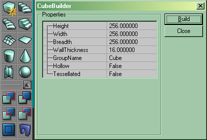
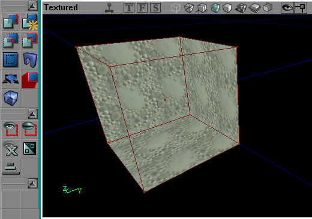

Subtract A Space
This page is both:
- a Basic Procedure tutorial page. It explains how to perform a single procedure which is required in many different contexts.
- One of a sequence of Mapping Lessons.
Overview
The Unreal Engine thinks of the entire Unreal world as solid matter when you start a new map. So before you do just about anything in UnrealEd, you'll need to make some space so you've got somewhere to place things. This is called subtracting, because we tell UnrealEd to remove a chunk of "solid" material and make a space within it. This tutorial shows you how to do this. The space you create can be a room, or a large outdoor space: that will all depend on how it is textured, decorated and lit later on.
Instructions
To create a space from scratch:
- If you need to start a fresh map, do UnrealEd Main Menu → File → New
The UnrealEd Interface has a set of buttons running down the left side of the screen. This is called the toolbox and is divided into several groups. In the 3rd group of buttons, find the top-left button of that group is a blue-green cube. (In UnrealEd 2 and later, each group can be collapsed, but normally this group is visible.) Right-click the cube button.
setting the cube builder parameters
- This opens a floating window with a list of parameters for the Cube Brushbuilder. Type in the height, width and breadth you want for the space. You can use the mouse to select the fields or hit Tab to move the focus. The numbers are all in Unreal Units. We suggest:
- a room: 256x256x256
- a hall: 1024x1024x512
- outside space: at least 4096x4096x2048, depending on what you want to put in the area.
- keep in mind that an unreal pawn is rougly 198 units high.
For more on using the parameters window, see Brushbuilders.
- Press "build". The UnrealEd Viewports should now show a red cube (in dotted red lines in versions earlier than UnrealEd 3).
This step forges the red builder brush. It's a special object, which acts like a sort of 3D cursor or template (there's more than one way to visualize it). You should now see it as a red cube in the 3D viewport. To pan around the viewports, click the left mouse button in the viewing area and drag; for more on this see Camera Movement.
Find the 4th group of buttons in the toolbox. The top-right one's tooltip says "subtract". click it. A hollow space appears in the 3d viewport.
subtracting a space
In more depth
This action has taken the current shape of the red builder brush, and used it as a template to create a real, subtractive brush in the world.
The other brushbuilder buttons create different basic shapes, for example the cylinder brushbuilder will create a circular room. Complete reference for these tools: Brushbuilders.
Related Topics
- Place A Light – Your recommended next step in the Mapping Lessons.
- UnrealEd Interface – a complete reference for UnrealEd's menus, windows and buttons.
- General Scale And Dimensions – compares Unreal Unit dimensions to real world scale
Discussion
Musicalglass: Now that this page is fully mirrored on both Create a Room and [/Functional Map]? I would like to update it so it contains more information which relates specifically to subtraction, and remove the parts about creating a room. Before doing so I would track down all links to this page and update them so they are in the proper context. For instance, if I said "Subtract a Space from your Added Space" and linked here, they would get a tutorial on how to build a room, which is not quite right. Subtract a Space is an "Element" of the "Process" Create a Room. I realize this is a longstanding argument on this WIKI. If you disagree with my logic, Tarquin, simply delete my comment here and I will take that as a "No way". Otherwise I will proceed with this simple restructuring in a few days
Tarquin: Well I don't really understand what is happening here. Mapping Lessons/Functional Map seems fairly pointless. This page seems fairly specific to the subtracting action. Not sure what Create a Room is for, since the point was to give a sequence of relatively small Mapping Lessons pages that work together. The way I planned it, this page works double: a) a basic procedure and b) a step of the Lessons. Maybe the Lessons sequence needs a page to come BEFORE this one, what do you think?
Musicalglass: Well, although I agree with the the basic concept of having reusable bit's of info, and I can relate to experienced programmer's impatience with wordy procedures and agree with the cut to the chase style of describing procedures on the Wiki, I think throwing people right into that is a little hard on beginners. I try to keep in mind the posibilty of the 10 year old who is primarily a gamer and the extent of his computer knowledge may be using AOL or something. I think there should be at least one tutorial sequence which is written in plain understandable language which familiarizes you with all the basic tools. From there when you move on to the more advanced pages written in Wiki style, it all makes more sense because now you're familiar with the terminology. When I first started trying to learn Unreal I found the whole jumping around from link to link thing very disorienting as each new page went off in another myriad of directions and you quickly lost any sense of a comprehensive chain. All I wanted was a simple beginner's tutorial which walked you through all the basic tools and told you how to deal with any problems or misunderstandings that might arise. But what I got was pages that were part of another incomplete chain than what pertained to my specific question or that assumed that you had already memorized one of the the other pages, which also went off in it's own direction. I'm not sure what's up with Functional Map either. You can't use it in a sentence for one thing. Seems to be in a folder and can't be linked from all parts of the Wiki without a prefix, is that right? I appreciate someone's efforts to ridgidly adhere to this Wiki language style, but I think it's not graphic enough and makes more sense to those who are already familiar with the application. Here's my line of thinking: put yourself in the shoes of some kid who just discovered he can make his own levels for Unreal. What's the first thing he wants to do? Get into the game. So clearly any begginer's tutorial should cover building a room. By that time you've already familiarized yourself with the basic concept of subtracting a space and now a separate page is uneeded, unless you have a different question pertaining to subtraction like, "why don't the textures appear on the outside of My subtracted spaces?" etc. So if I were to come here, I would want to find everything there is to know about subtraction. Same with placing a light. Already learned it in the beginner's tute, but if I need more info, go to Place a Light, see? You've got to look at each "Element" page and ask yourself if it works in all possible contexts where someone might refer to it.
Also I'm kind of pushing for having two distinct chains of the same info; one is the light version which shows you the simplest possible method to do one thing, (Mapping Lessons, suggest rename to Beginners Guide) and then a second chain which details the 6 different ways you can do this or that and covers each topic in detail. What is currently Beginners Guide to Mapping is turned into an index page just like mapping lessons and broken up into chapters; Texturing, Lighting, etc. and is the encyclopedia of everything we know on the subject. Call that Complete Guide to Mapping
Tarquin: About half of the whole wiki is the "Complete Guide to Mapping". When you say "6 different ways you can do this or that" do you mean the sort of bullet lists you get on Actor Properties Window? Just read the first bullet and ignore the rest  I'll have a look at Mapping Lessons this week and see if I can clean it up.
I'll have a look at Mapping Lessons this week and see if I can clean it up.
Musicalglass: Yup, pretty much.
I pondered the absurdity of my proposition for a couple days, looked over the existing data there is to work with and, yeah about 75% of the Wiki would end up under this topic. I made a rough draft for your consideration: The [Complete Guide to Unreal Editor]?. I'm not going to dive into this ambitious project for a bit, and it needs to go through the regular discussion phase. I'm currently working on my update to Playing Mesh Animations.
As far as my personal level of development, I would really, really like to see you guys update the entire scripting section into something readable from the standpoint of someone who has little or no knowledge of Java or C+. HelloWorld is simple and to the point, but the pages before that that tell you how to get set up for scripting are too technical. The prerequisite for doing HelloWorld tells me to decompile all the source code. I don't need to do that to make my first script. There's 4 highly technical pages about scripting before you get to your first simple lesson. I think someone can do a My First Script tutorial for Mapping Lessons which walks you through the procedure of getting set up and compiling the HelloWorld script in fairly straightforward language assuming no knowledge of what a command prompt is or anything obvious to a programmer. Then we need some pages of short practical working examples of Unreal Script. Most of the scripting pages assume prior knowledge of programming and the examples are abstracts dealing with pizzas and anchovies but no simple examples of dealing with ammo counts and firing rates, etc.
Someone needs to make a Scripting Basics tutorial which assumes no knowledge of programming. Somebody could just take one of those books of beginning C+ and plagerize it essentially, translating everything into unreal script. Start by explaining what variables are and show you how to declare variables in unreal script and then go on to show you how to actually do things with them with a bunch of simple code snippets: To take the Ammo count and add 1 to it, do this, to make it so every time you get shot your health is reduced by 50% do that. To make it so the door won't open till you hit it 3 times do this. You see? Then beginner's can take better advantage of the wealth of existing scripting information available here. In my new tutorial: Playing Mesh Animations, near the bottom I have explored the possibility of taking simple translational values and manipulating them with unreal script, using the rotation of a simple mesh cube. I would like to extend that into Scripting for Beginners so you can take the visual feedback of a moving object and do various things with it using script: like using different states to change the movement and so forth. That way beginners can learn scripting and get a nice sense of how it all applies to the game right away. Like if you can make a simple script that, when triggered the object will countdown from 6 and then blow up, then you have a scripting tutorial that gives you some sense of relevance to the game, you see?
Tarquin: I'm planning a "Hello world" aimed at mappers that won't need sources to be set up etc. Is that what you mean? But we're REALLY going off-topic now – see Mapping Hello World.